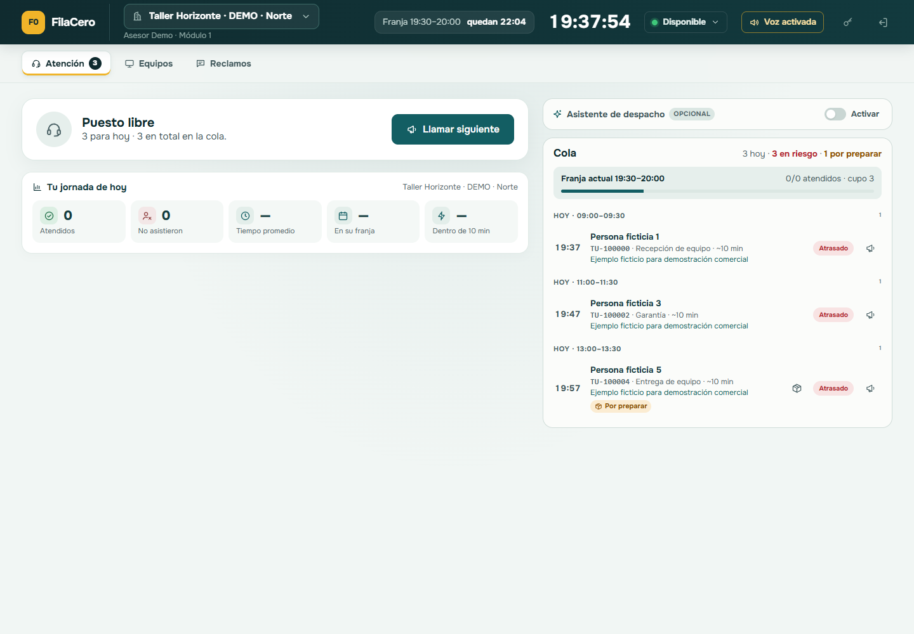

Reserva
El cliente elige sede, servicio y franja disponible desde su navegador.
TURNOS PARA TALLERES Y POSVENTA
Tu cliente reserva desde el celular, el taller prepara el equipo y el asesor llama el turno cuando está listo.
Solicitar una demoVer la demo de TecniVisiónUna reserva clara para el cliente.
Una tarea visible para el equipo.
EL RECORRIDO COMPLETO
El cliente elige sede, servicio y franja disponible desde su navegador.
Cuando hay una entrega, el equipo puede revisar lo que necesita alistar antes del llamado.
El asesor llama, inicia y finaliza la atención. Administración consulta la actividad por sede.
ASÍ SE VE
Turnos pendientes, atención en curso y preparación de entregas a la vista del equipo.
Explorar las funciones
Recepción, entrega de equipos y garantías.
Visitas programadas, orientación y recogidas.
Servicios, cupos y personal en cada punto de atención.
PILOTO DE 30 DÍAS
Definimos alcance, responsable y métrica antes de empezar. Configuramos las funciones existentes y revisamos el resultado contigo.
Desde un piloto acotado hasta acompañamiento para varias sedes. Infraestructura, mensajería y adaptaciones se detallan en la propuesta.
Consultar planes y alcanceUna conversación de 15 minutos para recorrer el producto y evaluar un proceso concreto.
Solicitar demostración